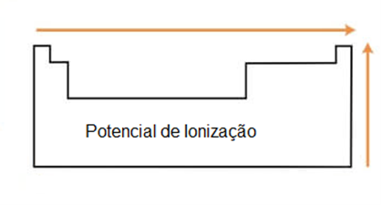

Propriedades periódicas
Para se ter uma base do que iremos discutir neste artigo, é recomendável que olhe nossa página sobre Tabela períodica!
O que são as propriedades periódicas?
As propriedades periódicas são padrões ou tendências observadas nos elementos químicos na tabela periódica, que estão relacionadas à sua posição na tabela.
Essas tendências ajudam a entender o comportamento dos elementos e suas características químicas.
Quais são essas propriedades?
- Raio atômico: Esta propriedade refere-se ao “tamanho médio” de um átomo, indicando a sua dimensão e a distribuição dos elétrons.
- Eletronegatividade: Já está propriedade refere-se à tendência do átomo a atrair elétrons em uma ligação química, esta é bastante utilizada para identificar a
polaridade das moléculas. - Massa atômica: A massa atômica é um conceito na química que se refere à média ponderada das massas dos isótopos de um elemento químico.
- Volume atômico: é o volume ocupado pelo um mol de átomos de um elemento, sendo diretamente influenciado pelo tamanho atômico.
- Ponto de fusão: determinada temperatura onde o sólido se transforma em líquido.
- Ponto de ebulição: determinada temperatura onde o líquido se torna gasoso.
- Potencial de Ionização: representa a energia necessária para remover um elétron de um átomo.

